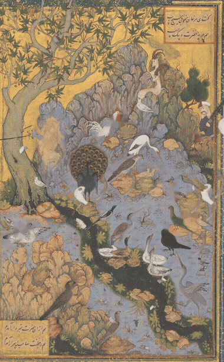
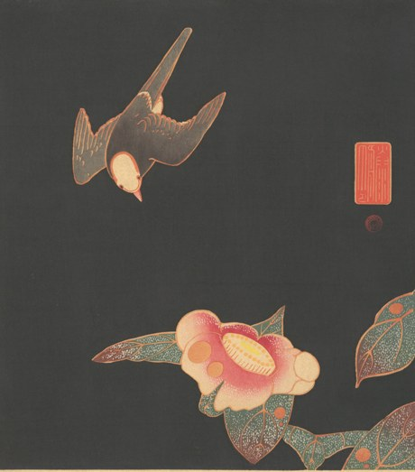
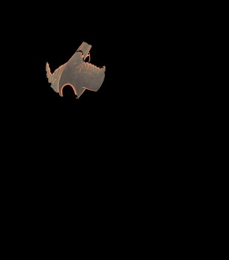
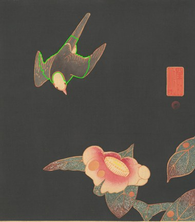
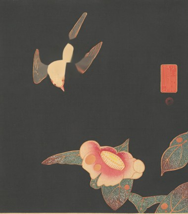
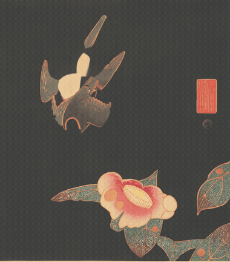
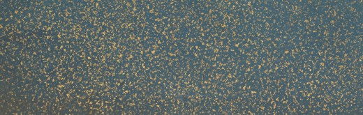

Method Test-Bed — replications on archive material 🔬
A lab notebook, not a gallery. Each entry takes one published method, runs it on real material from the corpus, and records what actually happened — including the failures, which are usually the informative part. The moodboards collect references; this collects attempts.
Five bays per test, always the same. ① the paper · ② the input (what we fed it) · ③ the interaction (the gestures/parameters we actually supplied) · ④ the output (what came back) · ⑤ the post-mortem — written for the next LLM that has to reproduce this on a different image, and phrased as instructions, not narrative.
Honesty rule for this page. Runs are reported at the parameters that produced them, with recall stated. Where a method under-performs we say so and name the cause — a tuned-until-it-looks-good result with the tuning hidden is worse than no result. Of the three runs below, one works, one is partial, one fails — the range is the finding, not any single run.
This page has already been corrected once. Test 01's verdict originally read "the machinery all works," which let the pipeline ran stand in for the result is good. It isn't: the birds read as sliding cut-outs. The researcher caught it; the panel is rewritten and the original wording is quoted in place rather than removed. Corrections stay visible on this page.
Renders anywhere. Source images are Met Open Access, public domain (objects 451725 and 57120), so unlike the copyright-bound design captures on this shelf, these can be republished — this page needs no "open it on your own machine" caveat.
① PAPER② INPUT③ INTERACTION④ OUTPUT⑤ POST-MORTEM
① The paper
Method 01 — animating the repeating elements of a still picture from a few sketched gestures.
A Mixed-Initiative Interface for Animating Static Pictures
Nora S. Willett, Rubaiat Habib Kazi, Michael Chen, George Fitzmaurice, Adam Finkelstein, Tovi Grossman
UIST 2018, Berlin · Princeton / Autodesk Research / Toronto · doi:10.1145/3242587.3242612
The premise: many pictures contain repeating elements — balloons, lanterns, snowflakes, raindrops, birds. If you can extract those elements, you can re-emit them as a kinetic texture and the still becomes a seamless loop that still looks like the original. The user supplies only a few scribbles; algorithms do the segmentation, depth-layering, and animation tuning. "Mixed-initiative" is the claim: neither fully automatic (too ambiguous) nor fully manual (too tedious).
Stage
What it does
User's gesture
A · Exemplar
LAB k-means (k=15) inside each circled area; the group furthest from the background groups seeds GrabCut (5 iterations)
circle 3–8 objects
B · Similar
GrabCut over the whole image seeded from those exemplars; connected components filtered on area + aspect by iterative quartile outlier rejection
optional refine brushes
C · Inpaint
PatchMatch fills the object holes → a clean background plate
optional inpaint brush
D · Layers
k-means on object area → depth layers; layer speed ∝ mean layer area ÷ mean overall area (small = far = slow)
reorder layers
E · Animate
Motion stroke → emitter line; stochastic emission under a logistic controller; auto-scale along the path; loop-seam search
draw one motion path
Why we tried it. The archive is full of images whose elements repeat — birds, flames, lotuses, stars, angels, pilgrims. If a still plate can be made to breathe from a few gestures, that is a candidate mechanic for the garden's reading surface: motion that is derived from the source image itself rather than imposed on it. The question this test answers is not "is the paper good" (it is) but "does it survive contact with pre-photographic artwork?"
Test 01 — The Concourse of the BirdsPARTIAL
The near-ideal case on paper: ~25 discrete, non-overlapping birds on a broadly uniform lavender ground. The paper's balloon/lantern scenario, four centuries early.
Habiballah of Sava — "The Concourse of the Birds", Folio 11r from a Mantiq al-Tayr (Language of the Birds)
ca. 1600, Isfahan · opaque watercolour/gold/silver on paper · Met 63.210.11 (obj 451725) · public domain · tradition ABR-ISL-SUF · run 2026-07-19, ~21 s
② INPUT
Cropped to the painting area. The full Met scan includes the folio's gold-flecked blue margin — thousands of tiny high-contrast specks that Stage B reads as "similar objects." Cropping first is not cosmetic; it is a correctness step.
③ INTERACTION
6 circle gestures — deliberately spanning the palette, not the class:
white rooster · black crow · green parrot
brown falcon · white gull · spotted hoopoe
9 background-brush marks — one per distinct ground: gold sky ×2, tree canopy, trunk, blue-grey rock, lavender ground ×2, tan rock, dark stream.
1 motion stroke — bottom-left → upper-right, toward the mountain.
An interpretive choice, not a default: Attar's poem is the birds' ascent through seven valleys, so they fly up and inward. The paper says as much — the motion decision "relies on artistic intuition or storytelling goals."
Stage C is the cheapest early warning in the whole pipeline: if birds are still visible here, the extraction failed and every emitted copy will be a fragment. Inspect it before rendering 125 frames.
exemplars 7similar found 10recall ≈ 10/25layers 3frames 125loop 8.3 s
④ OUTPUT

Seamless loop, birds ascending toward the mountain. Emitted at the density of the source (the paper's N-targeting controller), scaled along the path, three depth layers moving at different speeds.
Verdict — the pipeline ran; the result does not read as flight.(Revised after review — the first draft of this panel said "the machinery all works" and let that stand in for a good result. It isn't one.) The birds slide across the sky as rigid cut-outs, passing over the tree and mountain like stickers on glass. Five causes, and they are not equally fixable: Method–material mismatch (not fixable here):(1) the source birds are perched, not flying — every one is standing, wading or roosting, so what translates across the sky is a standing-goose silhouette. You cannot get flight from a posture the still image does not contain; that is an information problem, not a tuning problem. (2) Rigid sprites cannot articulate — real flight is wing motion, and the paper lists mesh deformation as future work. (3) With ~10 sprites the emitter visibly recycles the same goose. Our implementation gaps (fixable):(4) no occlusion layer, so nothing passes behind the rock or tree — the paper's own Fig. 2 layer stack puts the castle between balloon layers, and we put all three layers in front. (5) Ragged masks leave halos. The real error was selection, not execution. We matched on "does this image have many discrete repeating elements?" (yes, ~25) and never asked "is this element's real-world motion rigid translation?" Every successful example in the paper — balloons, lanterns, snowflakes, raindrops, polka dots — is a rigid body that drifts. That is the method's actual verb: drift, not flight. Birds are the one item in the paper's own opening list that violates it. See Test 03, which puts that reading to the test.
Test 02 — Swallow and CamelliaFAILED BY DESIGN
Run deliberately as a boundary case — to locate where the method stops applying, which is more useful to know than another success.
Itō Jakuchū — Swallow and Camellia
ca. 1900 impression after Jakuchū (1716–1800) · polychrome woodblock print · Met obj 57120 · public domain · tradition EAS-SHN · run 2026-07-19, ~18 s
② INPUT

One swallow. One camellia. A flat near-black ground — which should be the easy case for segmentation, and in one sense is: the ground is perfectly uniform, unlike the miniature's.
③ INTERACTION
1 circle gesture — the swallow (large radius, 0.115; the bird's wingspan covers a third of the plate).
5 background marks — the dark ground, well clear of both bird and flower.
1 motion stroke — upper-left → lower-right, following the dive toward the camellia. Two layers.
There is no gesture that fixes this image. That is the point of running it.
PIPELINE

A body only — wings amputated

B 1 found (nothing to find)

C ★ ghost limbs — wings + tail left behind
Panel C is the diagnostic. The body was extracted; the wings and tail were not, so they stay welded to the "background." Everything downstream inherits the amputation.
exemplars 1similar found 1repetition noneframes 180
④ OUTPUT

A flock of body-fragments wheeling over a pair of disembodied wings. Instructive, and rather beautiful in a way the method did not intend.
Three distinct failures, worth separating.(1) N=1. Kinetic textures are a statistical device; with one object there is no texture to synthesize, so the emitter just clones. (2) Partial extraction. The swallow's pale body and dark wings are separate LAB clusters; keeping only the furthest cluster amputated it. (3) Ghost limbs. Because the mask was partial, the inpainted plate retained wings and tail, so every copy flies past its own abandoned parts. The real lesson:N=1 is not a small case of N=many — it is a different problem. A single object wants oscillation on a depth layer (the paper's own Fig. 15e frog), not an emitter. Reaching for the emitter here is a category error, and no amount of parameter tuning corrects it.
Test 03 — the ceiling test: the margin we threw awayWORKS
Test 01 concluded the method's verb is drift, not flight. This tests that claim on the strictest available control — the same folio, same pipeline, same afternoon. Only the element type changes, so artist, era, medium and scan quality are all held constant. The one variable that moves is the one under test.
The gold-flecked margin of the same Mantiq al-Tayr folio — the part Test 01 cropped off as noise
Habiballah of Sava, ca. 1600 · Met 63.210.11, same object as Test 01 · gold fleck on lapis ground · run 2026-07-19, ~16 s
② INPUT

A banner from the folio's border. Hundreds of near-identical rigid gold flecks on a uniform lapis ground — the method's home turf on both counts, and the exact opposite of the painting inside it.
The irony is the point: Test 01 discarded this region as segmentation noise. It is the best-suited part of the entire folio.
③ INTERACTION
4 circle gestures — one fleck each. No palette-spanning needed: they are all the same gold.
0 background marks. The ground is genuinely uniform, so the crutch Test 01 required is unnecessary here.
1 motion stroke — upper-left → lower-right. Falling, with a lateral drift.
Run twice, identical in every respect except Stage B: once with the paper's GrabCut, once with a nearest-centroid colour classifier.
Gold drifting across cleared lapis — three depth layers at different speeds, scaled along the path. This is the method working as designed.
Verdict — the drift reading holds, and it localises the fault precisely. Same folio, same pipeline, same gestures: rigid drifting elements work; articulated flying ones do not. That is a property of the method, not of Persian miniatures, of the Met's scanning, or of our parameter choices — the control rules those out. And the 217× isolates the cause. GrabCut has a scale floor: its smoothness term penalises many tiny isolated foreground islands, so on a stippled ground it returns almost nothing (0.18% foreground, 5 surviving components). Swap that one stage for a classifier with no scale floor and the same four gestures yield 3,692 objects. This is a second, independent line of evidence for Test 01's conclusion that Stage B is the binding constraint — there arriving via polychrome objects, here via sub-scale ones. Caveats, stated. The colour classifier is not the paper's method — it is a deliberate substitution to isolate the variable, and it would fail where GrabCut succeeds (objects whose colour overlaps the ground, which the graph cut resolves via spatial coherence). Only 300 of 3,692 are animated, a render budget and not a detection limit; all 3,692 are inpainted. Two implementation bugs surfaced and were fixed here: a fixed 7×7 dilation that merged thousands of masks into a full-frame blob and returned mush, and a 3×3 morphological open that erased objects a few pixels across.
⑤ Post-mortem — notes for the next LLM
Written as instructions for whoever runs this on the next image, in rough order of how much time each one saves. Severity: BLOCKING gets you nothing without it · HIGH costs you runs · NOTE quality/efficiency.
Crop to the plate before anything else.BLOCKINGMuseum scans include mat, margin and frame. This folio's gold-flecked blue border is thousands of tiny high-contrast specks, and Stage B classes them as "similar objects" — the animation then emits margin flecks. Crop to the painted area first, always.
Never guess coordinates off a thumbnail — render a percentage grid and look at it.BLOCKINGThree of the five bird runs failed because my circles landed on ground rather than on birds; the "exemplars" came back as discs of rock. One grid render (red lines every 5%, labelled) let me read positions off directly and fixed it immediately. This single step is worth more than any parameter.
Choose exemplars that span the object palette, not the object class.BLOCKINGGrabCut fits ONE global colour model. I first circled five white birds and Stage B returned 2.2% foreground — it had faithfully learned "find white things." Circle a white bird AND a black crow AND a green parrot AND a brown hawk. The paper states this in its own Limitations: "if objects vary in color and the user only circles objects of one color, we will miss labeling differently colored objects as foreground." Highest-leverage parameter in the whole pipeline.
On artwork, the background brush is mandatory — not the optional refinement the paper implies.HIGHThe paper's inputs are photographs and cartoons with simple skies. A miniature's ground is multi-modal — gold sky, blue-grey rock, tan rock, tree canopy, water — and GrabCut's global GMM cannot separate objects from a five-mode background unsupervised. Place one explicit background mark per distinct ground region. Without them: ~2% foreground. With them: usable.
Sample the ground from the annulus outside the circle, not from the drawn stroke.HIGHThe paper marks pixels under the circle stroke as background. That is fragile — a stroke that clips the object poisons the background model. Cluster the ring outside the circle separately (k≈8) and pick the in-circle groups furthest from those centres. This change alone took the birds from 3 exemplars to 10.
Allow more than one foreground cluster per circle.HIGHA bird with a white body and a dark wing is two LAB clusters. Keeping only the single furthest cluster amputates it — precisely what mutilated the swallow. Keep every cluster within ~72% of the best distance. Watch for the opposite failure too: too loose a threshold swallows the ground.
Check the inpainted background plate before rendering a single frame.HIGHStage C is the cheapest diagnostic available. If objects (or parts of them) are still visible there, the extraction is partial and every emitted copy will be a fragment flying past its own leftovers. Ten seconds of looking saves several minutes of rendering and a misleading result.
Report recall; do not tune until it looks good and then call it a success.HIGHWe found ~10 of ~25 birds. The animation looks acceptable because the emitter re-uses what it has — which means the output's plausibility is not evidence the extraction worked. Always state found-vs-actual. A method that recovers 40% of objects and says so is more useful than one that hides it.
Decide whether the image is an N=many or an N=1 problem first, and pick the technique accordingly.BLOCKINGThis method is built for repetition; its entire machinery is repeating-element extraction plus stochastic re-emission. For one object, use single-object oscillation on a depth layer (paper Fig. 15e). Running the emitter on N=1 produces cloning, not animation. Ask "how many of the thing are there?" before choosing the method.
PatchMatch matters more than it looks; cv2.inpaint is a stand-in with a known cost.NOTETelea inpainting is fine on smooth grounds (the lavender worked) and smears on textured ones. If the background is doing visual work — pattern, brush texture, gold leaf — budget a real PatchMatch implementation rather than accepting the smear.
The motion stroke is an interpretive claim. Record why you drew it that way.NOTEWe sent the birds up toward the mountain because Mantiq al-Tayr is an ascent narrative. A different stroke would have made a different reading of the same plate — birds scattering, or descending to water. The paper concedes the point; for our purposes the stroke should be logged alongside the parameters, because it is an argument about the image, not a setting.
Ask what the element's real motion IS before choosing the method — drift or articulation?BLOCKINGThe selection error behind Test 01. "Many discrete repeating elements" is not the criterion; "is this element a rigid body whose real motion is translation?" is. Drift-shaped: snow, rain, petals, embers, sparks, bubbles, leaves, lanterns, balloons, stars, flecks. Articulation-shaped and therefore out of scope: birds in flight, running animals, flames, water, cloth, smoke. A perched bird can never be made to fly by this method — the still frame does not contain the wing-extended pose, so it is an information problem, not a tuning one.
GrabCut has a scale floor. Below it, replace the stage rather than tune it.HIGHMeasured in Test 03: on a stippled ground GrabCut returns 0.18% foreground and 17 objects, because its smoothness term penalises many tiny isolated foreground islands. A nearest-centroid colour classifier on the identical input with the identical gestures returns 3,692 — a 217× difference. If your objects are only a few pixels across, do not tune GrabCut; substitute the stage and say that you did. (The reverse also holds: the colour classifier fails where object and ground share a colour, which the graph cut resolves via spatial coherence. Neither dominates.)
Scale morphology and dilation to the objects — never use fixed kernels.HIGHTwo separate bugs from this, both found in Test 03. A fixed 3×3 morphological open erased objects a few pixels across (halved the detection count). A fixed 7×7 dilation ×2 on the inpaint mask merged thousands of small masks into one blob covering most of the frame, so Telea "inpainted" the whole plate from almost no valid source and returned mush. Derive kernel size from the median object radius; skip the open entirely when objects are near kernel scale.
Cap what you render, never what you inpaint — and log the cap.HIGHRender cost is O(frames × particles), so thousands of objects need a budget. But if the cap reaches Stage C, the un-animated remainder stays burnt into the plate and the drift becomes invisible against a ground that still has the objects on it (this happened, and looked like "the animation didn't work"). Inpaint all detections; animate a subset; print the truncation. A silent cap reads as "we animated everything."
Measure the loop seam; don't eyeball it.NOTECompare mean |Δ| across the seam (last→first) against the mean |Δ| between adjacent frames. Ratio under ~2× is imperceptible; well above means a visible jump. Measured here: drift 1.1× and birds 1.3× (both genuinely seamless), swallow 2.6× (visibly jumps). Two lines of code, and it converts a claim into a number.
Hold the plate constant when you want to test the method.NOTETest 03 could have used a Hiroshige snow print, but then artist, era, medium, palette and scan quality would all have moved at once and any difference would be uninterpretable. Using the margin of the same folio changes only the element type. When the question is "is this a property of the method or of the material?", find the control that already exists inside the image you have.
Work at ~1400 px on the long edge.NOTEFull museum scans are 2600×3900+. Downscaling costs nothing in segmentation quality, and the whole pipeline then runs in ~20 s, which is what makes five iterations affordable in one sitting.
The finding, in the shape the three runs give it. The method has one verb and one binding constraint, and the range across the three tests isolates both.
The verb is drift.Works on rigid elements whose real motion is translation (gold flecks — Test 03). Partial on articulated motion, where a perched bird can never be made to fly because the still frame lacks the pose (Test 01). Fails at N=1, which is a different problem needing oscillation, not an emitter (Test 02). Test 03 establishes this as a property of the method rather than of the material, because it holds the plate constant — same folio, same gestures, only the element type moves.
The constraint is Stage B, reached independently from two directions: polychrome objects on a multi-modal ground defeat GrabCut's single global colour model (Test 01), and sub-scale objects fall through its smoothness prior entirely (Test 03, 17 vs 3,692 — 217×). Everything downstream — inpainting, layering, emission, scaling, looping — worked essentially first time in all three runs, and the loop seam measures as genuinely seamless in two of them.
So: if this mechanic is wanted for the garden, replace Stage B and keep C–E. A class-agnostic segmenter (SAM-style) seeded by the same circle gestures is the obvious candidate — untested here, and flagged as speculation. And choose plates by the verb: the garden's drift-shaped material (petals, embers, snow, stars, flecked grounds) is where this pays off, not its birds.
The code
One file, image-agnostic — gestures are normalised 0–1 so they are resolution-independent and portable between plates.
All five stages, faithful to the paper's actual mathematics rather than a gesture at it: the two-phase emission probability with its logistic controller, the scale-over-path linear fit, and the loop-seam distance. Two acknowledged substitutions: cv2.inpaint (Telea) for PatchMatch, and the outside-annulus background sampling described in note 5 above, which departs from the paper because the paper's version failed on this material.
// the paper's emission controller — Stage E
P_e(t_i) = P_d(t_i - t_{i-1}) if t_i < D/v // fill the pipeline
= P_d(t_i - t_{i-1}) · C(n) otherwise // steady state
P_d(δ) = N·v·δ / D
C(n) = 2e^x/(e^x + 1), x = N - n // N = target count from the source image
// the loop-seam search — find where the animation can cut and rejoin
D_ij = Σ_{k=0}^{K-1} (K-k)/K · ( |(t_{i+k}-t_i) - (t_{j+k}-t_j)| + |e_{i+k}-e_{j+k}| )
minimised over pairs, interval constrained to 2×–4× particle lifetime
Status: exploratory. Lives in the scratchpad, not in scripts/, and carries no methodology footer yet — it is a diverge artifact. If this mechanic gets adopted, it consolidates into scripts/ with the footer and a seed-agnostic CLI at that point, not before.
Reproduce
Exact commands, in order. Both source images are in the media cache with provenance rows in manifest.jsonl.
# deps
uv add opencv-python-headless # ffmpeg via homebrew# inputs — Met Open Access, fetched 2026-07-19, provenance appended to manifest.jsonl# obj 451725 → data/media_cache/77cdb0cc6f7610eb.jpg (Concourse of the Birds)# obj 57120 → data/media_cache/d8c7fa67133e8c99.jpg (Swallow and Camellia)# step 1 — crop to the painted area (NOT optional, see post-mortem note 1)# step 2 — render a labelled percentage grid and LOOK at it (post-mortem note 2)# step 3 — read circle/bg coordinates off the grid, then:
python animate_static.py --image birds_crop.jpg \
--circles "0.52,0.35,0.028; 0.76,0.65,0.022; 0.83,0.61,0.020; \
0.29,0.81,0.026; 0.10,0.63,0.024; 0.77,0.53,0.018" \
--bg "0.42,0.56,0.020; 0.62,0.58,0.018; 0.13,0.75,0.020; \
0.20,0.90,0.020; 0.30,0.05,0.020; 0.55,0.13,0.018; \
0.47,0.25,0.018; 0.42,0.72,0.016; 0.20,0.10,0.018" \
--motion "0.30,0.95 0.72,0.12" --out ./run_birds --layers 3 --fps 15
# outputs: a_exemplars.png b_similar.png c_background.png frames/ animation.gif animation.mp4 run.json# CHECK c_background.png BEFORE trusting the gif (post-mortem note 7)